Нейронная постобработка — это удобный способ использования нейронных сетей в процессе постобработки. С помощью редактора материалов вы можете настроить постобработку с использованием нейронных сетей, не прибегая к написанию кода.
Прежде чем начать, необходимо включить в проекте плагин Нейронный рендеринг. Это можно сделать в браузере Плагины, расположенном в главном меню в разделе Редактировать. Этот плагин содержит весь необходимый код для запуска нейронной сети на основе нейронного профиля и нейронного буфера/текстуры, заданных в редакторе материалов.
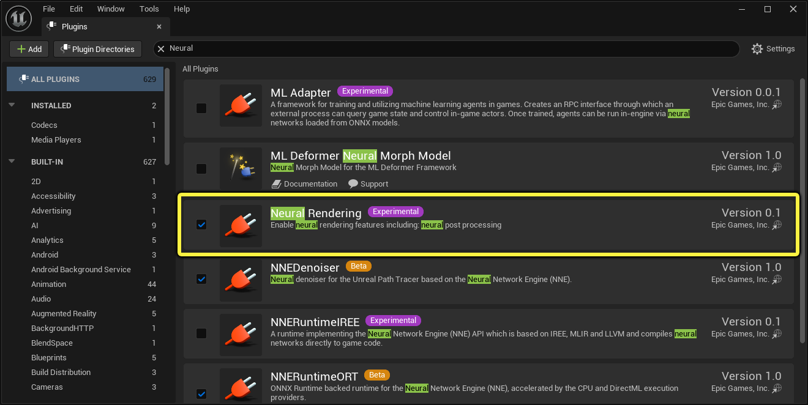
Следуйте инструкциям ниже, чтобы импортировать и настроить нейронную сеть в формате ONNX, а также создать материал для постобработки, который будет использовать эту нейронную сеть.
Выполните следующие действия, чтобы импортировать и настроить совместимую модель нейронной сети в Unreal Engine.
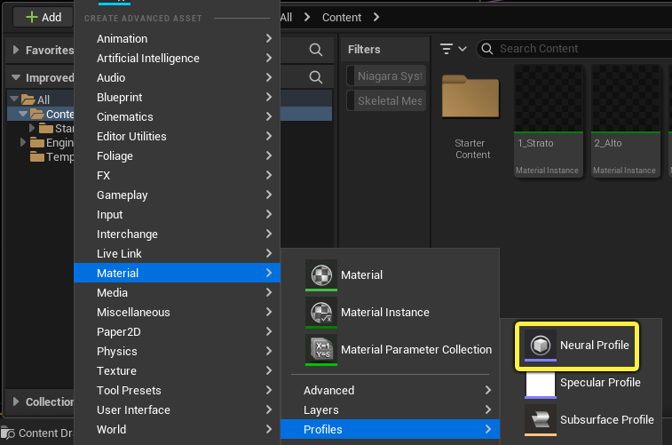
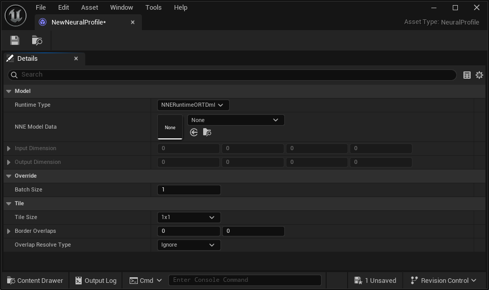
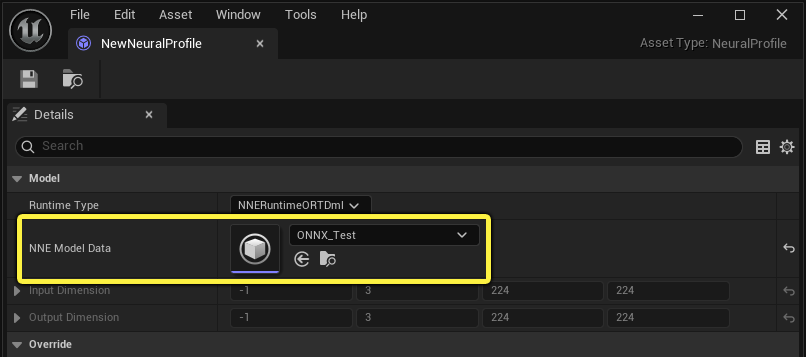
Выполните следующие действия, чтобы настроить материал для постобработки, использующий нейронный профиль с некоторой графической логикой.
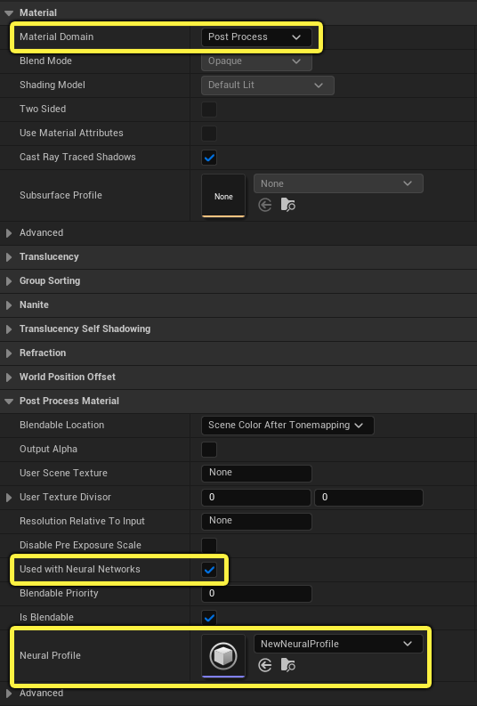
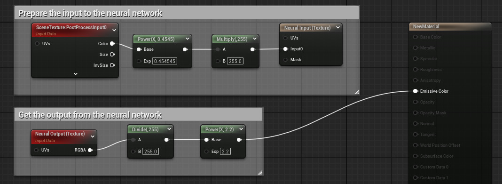
При такой настройке материал может выполнять предварительную и последующую обработку данных с помощью всех доступных узлов в редакторе материалов. В этом примере применяется простая гамма-коррекция с коэффициентом 1/2,2, а диапазон значений входного сигнала масштабируется с 0–1 до 0–255, а после получения выходных данных от нейронной сети диапазон значений возвращается к исходному. Масштабирование требуется не всегда. Это зависит от диапазона входных и выходных данных модели нейронной сети. Если входные и выходные данные модели находятся в диапазоне от 0 до 1, то настройка будет проще, как показано ниже:
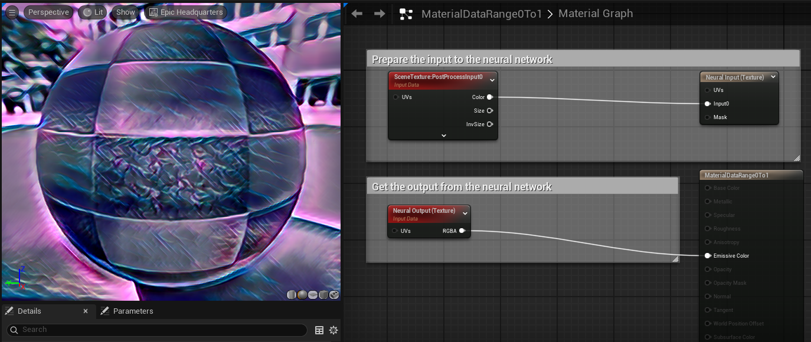
Ниже приведен пример, в котором мы используем пользовательские области для применения стандартного светлого материала в качестве маски.
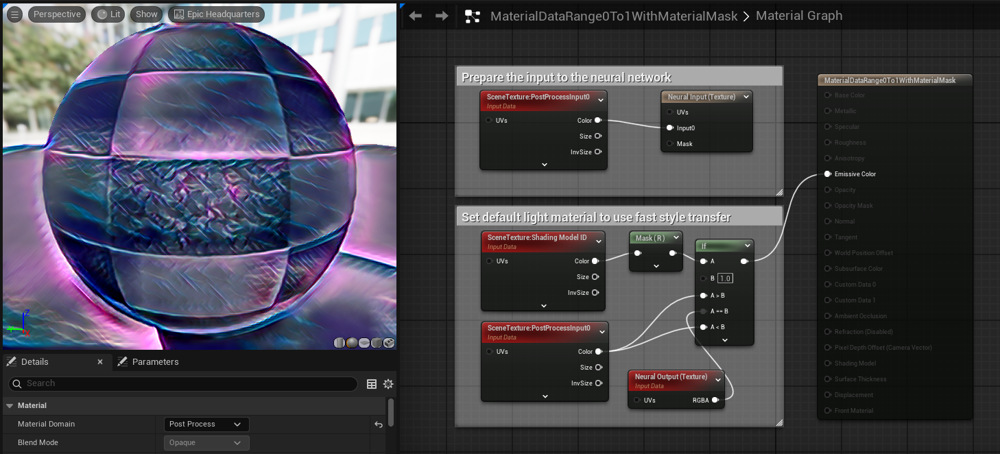
С помощью этой настройки можно добиться следующих результатов:
Нейронный профиль используется для привязки к нейронным сетям, указания времени выполнения, размера пакета и конфигурации фрагментов.
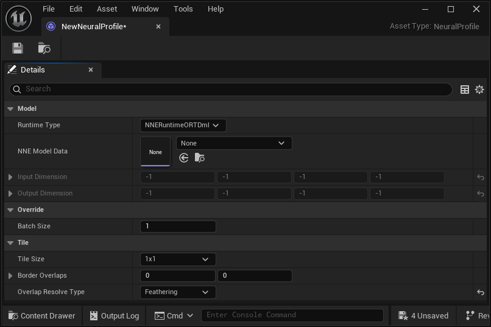
Разбиение на фрагменты поддерживается в режиме индексации текстур, в том числе с перекрытием фрагментов. При объединении перекрывающихся фрагментов можно выбрать игнорировать или сглаживать края, чтобы использовать такие функции, как нейронная фильтрация и перенос стиля. Чем больше фрагментов, тем выше детализация, но это может потребовать больших вычислительных ресурсов в зависимости от сложности сети. Это пример нейронного переноса стиля с использованием разбиения на фрагменты 2x2 со сглаживанием краев, при котором швы скрыты.
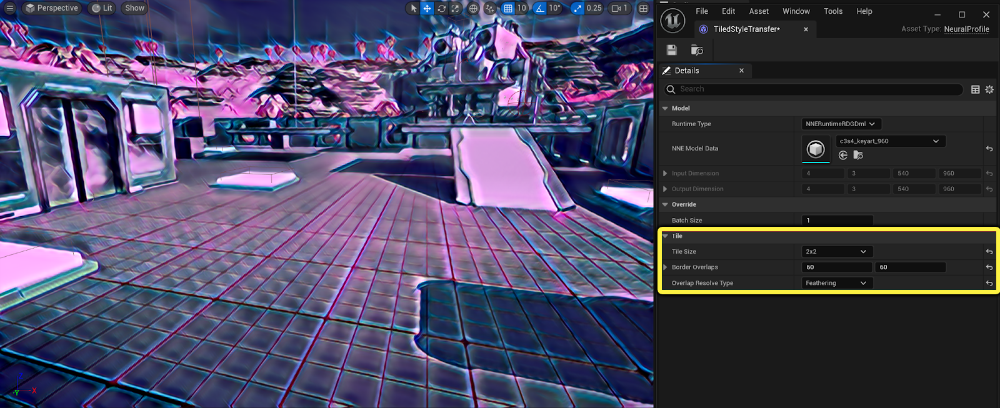
Вы можете визуализировать перекрытие фрагментов с помощью команды r.Neuralpostprocess.TileOverlap.Visualize 1.
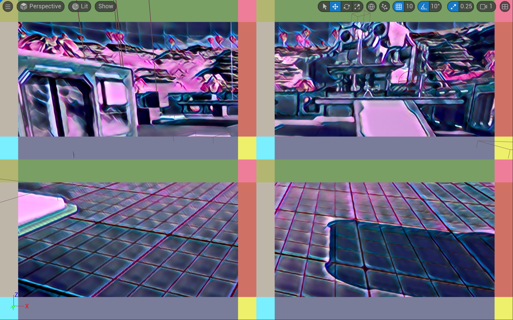
Если для параметра «Размер тайла» установлено значение «Авто», размер тайла не будет масштабироваться, а сеть будет напрямую применяться к нейронной входной текстуре. Тайлы за пределами текстуры в этот момент зеркально отражаются. Вот пример с визуализацией перекрытия тайлов, когда для параметра «Размер тайла» установлено значение «Авто».
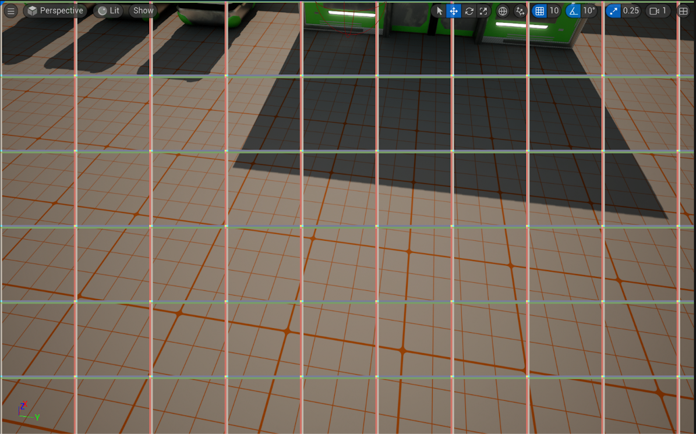
Текстуры уменьшаются или увеличиваются до целевого размера или остаются в исходном размере, если для параметра «Размер тайла» установлено значение Авто. Текущий режим индексации текстур по умолчанию поддерживает режим [1 x 3 x H x W]. Чтобы использовать произвольную модель ONNX с другими размерами [B x C x H x W], можно использовать режим индексации буфера. Этот режим обеспечивает полный контроль над фактическим считыванием и записью значений. Встроенная фильтрация не предусмотрена, поэтому вам нужно будет применить необходимые фильтры либо с помощью логики материала в графе материалов, либо написав собственный код шейдера. Ниже приведен пример разбиения сцены на пакеты B=2x2, которые задаются с помощью узлов «Нейронный вход» и «Нейронный выход» (буфер).
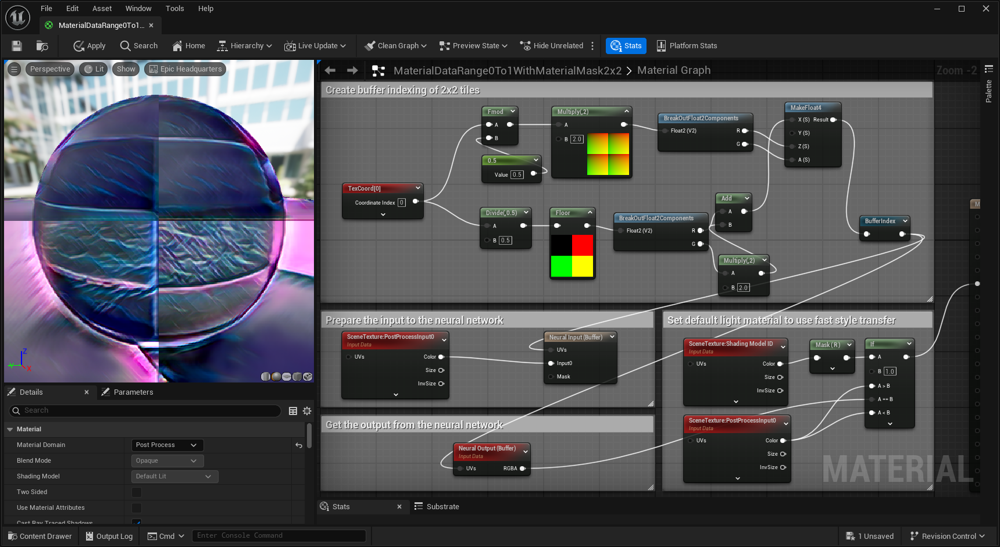
Вам также потребуется изменить некоторые настройки в ресурсе «Нейронный профиль». Вы можете воспользоваться одним из следующих вариантов:
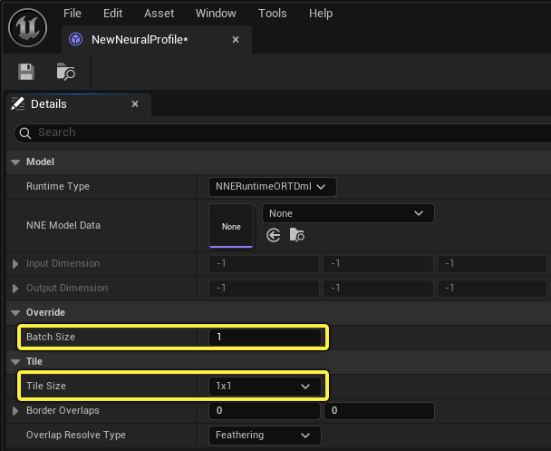
Плитки вызываются последовательно, а пакеты распределяются за один запуск. Эти два варианта можно использовать вместе, в зависимости от того, как вы организуете чтение и запись в буферы. На данный момент при каждом вызове узла Neural Output считываются три последовательных канала.
Вы можете выбрать одну из двух сред выполнения NNE:
Вы можете использовать нейронную постобработку в своем проекте при рендеринге в реальном времени или в качестве инструмента для захвата сцены. Ниже приведены некоторые возможные варианты применения: Стилизация: быстрая передача стиля, AnimeGAN, CartoonGAN, Pix2Pix, CycleGAN Скетч: ShadeSketch Нейронное тональное отображение Сегментация и классификация изображений
Количество вызовов нейронных входных/выходных узлов. В одном материале постобработки можно использовать только один узел Neural Input, но допускается использование нескольких узлов Neural Output. Маска нейронного ввода. С помощью маски можно выбрать часть экрана для записи в буфер / текстуру. Например, если прямоугольная фигура находится в левом верхнем углу, можно установить для этой области значение 1, чтобы UV-развертка и входные данные были эффективными, и записать их в буфер, игнорируя остальные UV-развертки и входные данные, если для маски установлено значение 0. Если разрешение результата низкое. На разрешение результата влияет размерность выходных данных модели. Проверьте размерность выходных данных в разделе «Нейронный профиль». Чтобы увеличить разрешение, вы можете либо экспортировать модель с более высоким разрешением, либо использовать буферную индексацию / разбиение на фрагменты, о которых говорилось выше, чтобы увеличить размерность. Обратите внимание, что в некоторых моделях могут возникать разрывы на границах. Расположение буфера. В режиме индексирования текстур изначально поддерживается формат BCHW. Поскольку формат разработанных моделей может быть BHWC (например, в TensorFlow), необходимо явно указать формат BCHW.
r.Neuralpostprocess.Apply для включения или отключения применения нейронных сетей. При отключении нейронные входные данные напрямую возвращаются в качестве нейронных выходных данных.